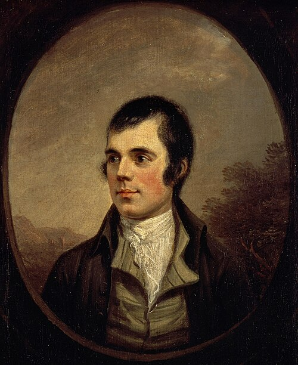
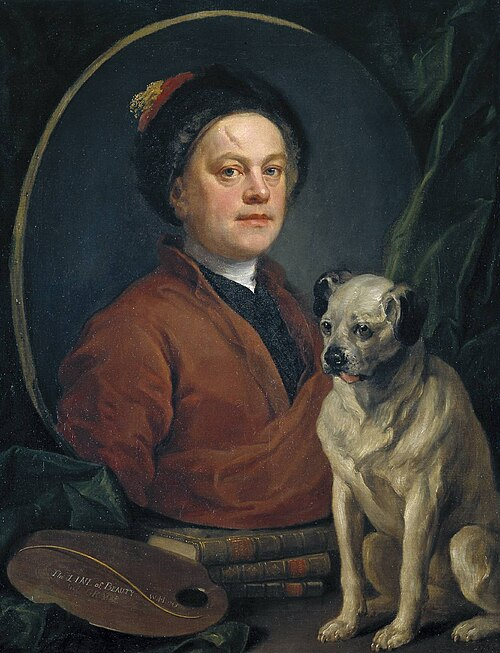
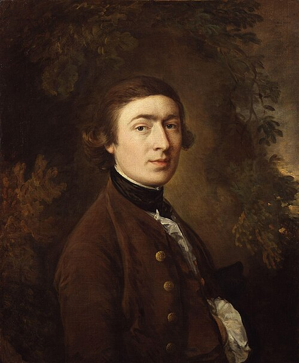
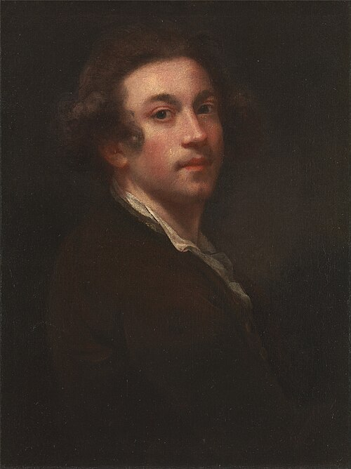
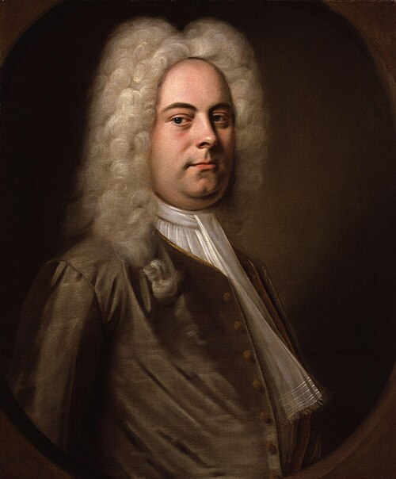
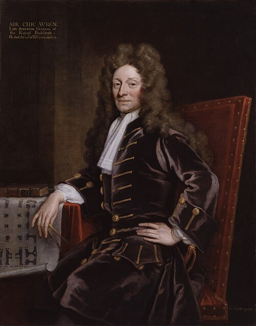
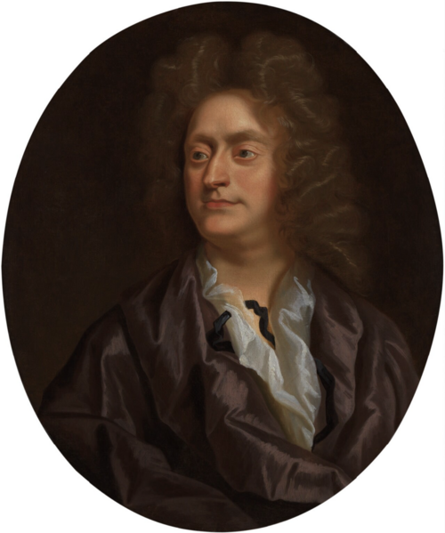

«Высшая проба» Round 2 · Задание 8: one talk, five statements, heard once
📅 7 November 2026 · Lesson 16 · trains Задание 8 (True / False), Задание 7 (speakers), Задания 9 and 10 · history era 5: the 18th century · culture: Robert Burns
Blocks checked: 0 / 0
Points today: 0 / 0
👩🏫 Teacher only · Lesson 16 plan · 90 min (tap to open / close)
The thread: last lesson she matched speakers to statements (Задание 7). Today one long talk and five True/False statements (Задание 8): first the four traps the statements use, then the wolves talk heard once and replayed to find the proof, then two new talks heard once and one Задание 7 set for mixed practice → back to history: the century after the Stuarts → the people of that century: first taught (seven cards with the clues a text would use), then decoded.
0–8 · Warm-up: Stuarts retold without the timeline (3) · Shakespeare recall (2) · six nature words (3). Check the Shakespeare Задание 9 from homework while she retells, if there is time; otherwise at the end.
8–43 · Block A, the traps: the demo statements (5) · the four traps, 8 lines (8) · wolves talk once (8) · replay and find the proof (8) · make a trap (4) · buffer (2).
43–47 · Break.
47–72 · Block B, one listen: jays talk (8) · sleep talk (8) · Задание 7 set (9). The five nature words only if there is time; otherwise press 📚 Move to homework on them. If it is after 64’ before the Задание 7 set, move the set to homework too.
77–88 · Culture: how to decode a person (2) · meet the seven 18th-century figures (4) · decode the clue (2) · Who is it? Robert Burns, a full text (3).
88–90 · Homework: open the Homework tab together.
👩🏫 Teacher only · Lesson notes: what this lesson teaches and why (tap to open / close)
1 · Where this lesson sits
Section 3 of Round 2 is worth 20 points: Задание 7 (five speakers, 10 points) and Задание 8 (one talk, five True/False statements, 2 points each). Lesson 15 built the Задание 7 routine. This lesson does the same for Задание 8. Задание 8 looks easier, with two options and one speaker, but in the demo it is where points are lost. In the demo talk (Lera Boroditsky on language and thought), three of the five statements are False, and each is False because of one small word, not a big misunderstanding. So the lesson is not mainly about listening for gist. It teaches her to read a statement the way the examiner wrote it, before the audio starts, so she knows which word to check.
Two exam facts to repeat: there is no “Not stated” option, so anything the talk doesn’t fully support is False; and the statements come in the order of the talk, so if she misses one, she should move on, because the next answer is coming.
2 · The four traps (the core idea)
Each False statement in the demo, and in every talk on this page, is built in one of four ways:
Opposite. The statement says the reverse of the talk, usually with the talk’s own words, so it sounds right. “Far from protecting the coast…” becomes “The wall protected the coast.” This is the most dangerous trap, because recognising the words feels like proof. The rule from Lesson 15 still applies: the same words are a reason to check twice, not a reason to tick True.
Both / unlike. The talk separates two things and the statement joins them. Demo 2: “Language, like culture, is a system… but unlike culture, it’s tightly structured” becomes “Language and culture are both highly structured.” She should underline both, and, like, also, the same.
Example ≠ meaning. The speaker gives an example and the statement turns it into a definition. Demo 5: hói can describe two small fish, which becomes “hói literally means two small fish.” Trigger words: means, literally, is called, is.
Normally / always. The statement makes the talk stronger (usually → always, rarely → never, one reason → the only reason), or turns one story into a general rule. Demo 1 is this type: the talk tells a story about one group of teachers who couldn’t point north, and the statement says “Normally teachers cannot navigate without a map.” The talk never mentions maps or what is normal.
The balance to keep: once she learns the traps, she will want to mark every both and every normally False. The page has True statements that use those words on purpose: Practice 1 line 5 (squirrels both eat nuts), wolves statement 1 (normally think of danger), jays statement 3 (both where and when). A trap word tells her where to check. It doesn’t give her the answer. If she over-corrects, show her these three.
3 · How Block A builds it
The order goes from seeing the trap to building one. Discover uses the real demo statements, so the traps come from the actual exam, not from us. Practice 1 isolates each trap in a single line, with nothing else to listen to, so she can name it. Practice 2 is the full format: a 2½-minute talk about the wolves of Yellowstone (V11 vocabulary: predator, habitat, species, landscape, wiped out), heard once. Practice 3 replays it to find the exact sentence that decides each statement. This is the most useful step of the block, because it shows that the proof is always one clause, often near the trap word. Speak makes her the examiner: to write a trap she has to know where traps hide. The homework repeats this with five statements.
The wolves talk has a twist that is useful in itself: it tells the famous “wolves changed the rivers” story and then corrects it (ecologists say it is more complicated: hunters, bears, drought, and willows that never recovered). Statement 4 tests whether she follows the speaker’s real position. In Задание 8 the speaker often reports an idea and then disagrees with it, so some people say… is not what the speaker thinks.
4 · Block B: exam conditions
Two new talks, heard once with no replay until she checks. Talk 1, the jays: jays bury thousands of acorns and forget some, so they “plant” oak woods; at Monks Wood in England an abandoned field became woodland. The traps: normally carried by the wind (opposite), jays and squirrels both move their food (only squirrels do), people planted the field (nobody did). Talk 2, sleep: giraffes sleep in minutes-long bouts; dolphins and ducks sleep with half the brain and keep one eye open; frigatebirds nap for seconds in flight. The traps: “unihemispheric sleep means one eye open” (example ≠ meaning: the open eye goes with it, the meaning is half the brain), and the duck’s eye facing the group (opposite); statement 2 is True and keeps the speaker’s probably, a useful contrast with the normally traps. Both talks are animal science, like many olympiad recordings, and they reuse V11 words.
The Задание 7 set is there on purpose. Mixing task types stops last lesson’s routine from fading, and in the exam she switches from 7 to 8 with no break. The traps here are animals that appear but don’t change anything (the cows, the hare), and a speaker who had all her equipment and regrets nothing. Answers: D E F C B, with A and G extra.
Note: our recordings are 2–2½ minutes; the real Задание 8 talk is 3–4 minutes. If the jays and sleep talks go well, tell her the exam talk is longer but the statements are just as spread out, so she shouldn’t panic if nothing happens for 40 seconds.
5 · History, era 5: the 18th century
The story is one chain of causes, and that is how she should retell it: the Act of Union (1707) makes Great Britain → Anne dies childless (1714), so the crown goes to George I of Hanover, who barely speaks English → so his ministers run things, and Walpole (from 1721) becomes the first Prime Minister, at 10 Downing Street from 1735 → meanwhile Britain beats France in the French and Indian War (1754–63, France loses Canada) → the war was expensive, so Parliament taxes the thirteen colonies → “No taxation without representation” → the Boston Tea Party (1773) → fighting (1775) → the Declaration of Independence (4 July 1776, written mainly by Jefferson) → Britain recognises the USA (1783) → Washington, the army commander, becomes the first President (1789). Meanwhile Britain starts a new empire: Cook reaches Australia (1770) and the First Fleet of convicts lands at Sydney Cove (1788). George III reigns 1760–1820 and loses America.
The Russian hook, 1773: Pugachev claims to be the dead Peter III and rises against Catherine II in the same autumn as the Tea Party. Pushkin’s Капитанская дочка is the link she probably knows. One revolt was crushed, the other made a country.
For Задание 10 she needs these anchors: 1707, 1714, 1773, 1776, 1789. They are all 18th century, but in the exam the trap is usually a neighbouring century, so the “first two digits + 1” drill continues.
6 · Culture figures for Задание 9 (the 🎭 Culture tab)
Задание 9 is mostly outside knowledge. In the demo, 3 of the 5 answers were not in the text (Twain’s real name, his characters, Orion). So each lesson adds people from the era she is studying. They are taught first and tested after, never the other way round. The Culture tab runs in four steps: (1) how to decode a person, the seven kinds of clue a text gives instead of the name (dates, place, job and family, works described without titles, people around them, name puzzles, things named after them); (2) a card for each figure with what to know, one unusual fact, a 🔎 line of the exact clues a text would use, and the lateral question that usually follows; (3) decode the clue, one clue → one name; (4) a full Who is it? text. The 🔎 lines matter most: they teach her to recognise a candle-maker’s son called Foe as Defoe, which a list of facts alone does not do. Today it is Robert Burns: Scotland’s national poet, a farmer’s son (1759–1796), who wrote Auld Lang Syne, sung at midnight on New Year’s Eve. Burns Night, 25 January, is his birthday, celebrated with haggis. For a Russian student the strongest link is Marshak, whose translations made Burns a household name in the USSR («В горах моё сердце», «Честная бедность»).
Shakespeare is the only V14 person she has met so far. The deck adds four more from the Stuart age that were not taught in Lesson 15 (Milton, Paradise Lost, dictated when blind; Van Dyck, Charles I’s court painter; Wren, St Paul’s after the Great Fire; Purcell, Dido and Aeneas), so all four are new to her this week. The seven 18th-century cards: Defoe (Robinson Crusoe; born Foe), Swift (Gulliver’s Travels; Dublin), Burns, Hogarth (moral picture series, like comic strips), Gainsborough (The Blue Boy; preferred landscapes), Reynolds (first president of the Royal Academy, 1768) and Handel (German-born; Messiah, Water Music for George I on the Thames). Gainsborough and Reynolds were rivals, and that is how the Olympway text (task 183) presents them.
The homework Defoe text trains the three lateral patterns from the plan: a name puzzle (Foe + “De”), a clue that has to be decoded (“named after the day of the week” → Friday), and an old name → new name (Selkirk’s island Más a Tierra was renamed Robinson Crusoe Island in 1966; it belongs to Chile). None of the five answers is in the text, so this is the hardest Задание 9 she has done. Score it out of 5, but tell her the format matters as much as the knowledge.
7 · Homework and the Olympway checks
The core hour: V14 cards, two Задание 8 talks heard once (falling leaves: yellow was there all summer, red is new; the English and the weather: Kate Fox’s “weather talk is a social code”), five statements of her own, the 18th-century story, and the Defoe text. The two talks repeat all four traps, so if she gets one wrong, ask which trap it was before you show the answer.
The Olympway tasks are checks of era 4 (the Stuarts and the colonies), as the plan says: checks come a lesson after the era is taught. Task 86 has very obscure items (Peach Tree War, Greenwich Tea Party, First Great Awakening). They are meant to be solved by elimination from anchors she knows (1492, 1636 Harvard, 1692 Salem, 1773), and that is the real Olympway skill. Task 167 includes Aleister Crowley (an occultist, “the prophet”), who is only there to be eliminated. In task 245 the hardest pair is Burns → Bruce Wallace, from his poem Scots Wha Hae.
8 · Next lesson
Warm-up: the 18th century retold without the timeline, plus 3 V14 cards (Defoe, Burns, Handel). Check the Defoe key (Daniel Defoe · Robinson Crusoe · Friday · Robinson Crusoe Island · Chile) and answer her five statements in class. Lesson 17 opens the 19th century and the biggest group of culture figures (Austen, the Brontës, Dickens, Carroll, Conan Doyle).
👩🏫 Teacher only · what to say · warm-up
Hello: “Last time you retold the Stuarts with the timeline in front of you. Today, no timeline. From James I to Anne in two minutes, with the colonies in the middle.”
Shakespeare: “Three questions about the writer from last lesson’s ‘Who is it?’ and your homework text.” If she misses one, she finds the answer in her Задание 9 homework and says the full sentence.
Six words: “Six nature words from Lesson 15. Some of them are in today’s recordings.” Every word she misses → a sentence about Yellowstone or a park she knows.
Homework check (Shakespeare, Задание 9): key 1 William Shakespeare · 2 Stratford-upon-Avon · 3 the Globe · 4 the King’s Men · 5 Hamlet. Ask: “Which answers were not in the text? How did you know them?”
Into Block A: “In Задание 7 you matched five people. Задание 8 is one person talking for three or four minutes, and five statements: True or False. It looks easier. It isn’t, because the statements set traps. Today we learn the four traps.”
Warm-up 1 · from Lesson 15 · 3 min
The Stuarts, without the timeline
Retell the story aloud in about two minutes: James I → Charles I → no king → Charles II → James II → William & Mary → Anne, with the colonies in the middle. Tap each word or link when you use it.
for the first timetwo years latermeanwhilecolonybreak outwas / were + V3restorecome to an end
0 / 5 used
👩🏫 Teacher only · listen for
1603 James VI of Scotland → James I (one king for both countries) · 1605 Gunpowder Plot, Guy Fawkes, 5 November · 1607 Jamestown, 1620 the Mayflower, 1636 Harvard · 1642 Civil War, Cromwell, 1649 Charles I beheaded · 1660 the monarchy was restored · 1665 Plague, 1666 Fire · 1688 Glorious Revolution · 1707 Act of Union · 1714 Anne dies, the Stuart line comes to an end.
Warm-up 2 · Shakespeare, from Lesson 15 · 2 min
Who wrote for the Globe?
From last lesson’s “Who is it?” and your Задание 9 homework text. No looking back. Spelling counts.
1Born in 1564, the son of a glove-maker; 37 plays and 154 sonnets; died in 1616. Who is it? (First Name Last Name)
2His home town is Stratford-upon-___. (an old Celtic word for “river”)
3After 1603, when James I became their patron, his company was called…
Warm-up 3 · random words from Lesson 15 · 3 min
Six random nature words
Read the Russian and type the English word or phrase. The first letter and the number of letters are shown. Press Check. Then say a sentence of your own with every word you missed.
from Nature & the environment (L15) · some of them come back in today’s recordings
🗣The words in context · now make your own sentence
👩🏫 Teacher only · what to say · the traps
Discover: “These are three of the five statements from the demo paper. All three are False. Before you hear anything, can you guess which word makes each one a trap?” Let her try before she looks at the options.
The rule box: “Four traps: opposite, both / unlike, example ≠ meaning, normally / always. Say them back to me.” Then: “The underlining is part of the routine. Before the audio you underline these words, so your ears are ready for them.”
Practice 1: “You hear one line. Is the statement True? If it’s False, name the trap.” She explains every False one aloud: “False, because it says usually, not always.”
Wolves talk: “Thirty seconds: read the five statements and underline the trap words. Then you hear it once, like in the exam.” Don’t stop the audio.
Replay: after Check the player opens. “Now we listen again. For each statement, find the sentence that decides it. Stop me when you hear it.” Pause the audio at each proof.
Make a trap: “Now you’re the examiner. One True statement and one trap about the talk. I’ll answer.”
Into the break: “After the break: two new talks, and this time no replay.”
Discover · from the demo paper · 5 min
Three False statements: what makes them False?
These are statements 1, 2 and 5 from the demo Задание 8 (the talk about language and culture). All three are False. Which trap does each one use?
🔎 think, don’t guess4 questions
1“Normally teachers cannot navigate without a map.” The speaker said only that a group of teachers, asked to point north, pointed in different directions. The trap is…
2“Language and culture are both highly structured systems.” The speaker said only one of them is. The trap is…
3“In Pirahã, the word ‘hoi’ literally means ‘two small fish’.” The speaker used two small fish as an example of hoi. The trap is…
4So before the audio, you should underline…
🪤 The four Задание 8 traps
Trap
What the statement does
Underline
1 · Opposite
Says the opposite of the talk, often with the talk’s own words: “The tea was thrown into the sea to celebrate…”
not, never, failed, refused; any verb
2 · Both / unlike
Joins two things that the talk keeps apart: A and B both… when the speaker said unlike A, B… or only B.
both, and, like, the same, also
3 · Example ≠ meaning
Takes an example and presents it as the definition: “X literally means …”, “X is …”.
means, literally, is called, is defined as
4 · Normally / always
Makes the talk stronger or weaker: usually → always; rarely → never; some → all; one of the reasons → the only reason; or turns one story into a general rule (demo 1: one group of teachers → normally teachers…).
normally, always, never, all, only, every
Routine. Before: read the five statements, tap-underline the trap words. While: listen for those ideas; the statements come in the order of the talk. After: a statement is True only if the talk says all of it. One wrong word makes it False.
🇷🇺 В Задании 8 нет варианта «не сказано»: только True или False. Если хотя бы одна часть утверждения не совпадает с записью (both вместо «только один», always вместо «обычно», пример вместо значения), ответ False.
Practice 1 · One line, one statement · 8 min
True, or which trap?
You hear one line from a talk. Is the statement True? If it is False, which trap makes it False?
🪤 4 traps8 lines
1“Unlike most birds, owls can turn their heads almost all the way round.”Statement: Owls, like most birds, can turn their heads almost all the way round.
2“Usually, the cuckoo lays its eggs in other birds’ nests.”Statement: The cuckoo always lays its eggs in other birds’ nests.
3“In Japanese, komorebi describes sunlight coming through leaves: for example, the bright patches on a forest path.”Statement: The Japanese word komorebi literally means “a forest path”.
4“Far from protecting the coast, the new sea wall actually made the erosion worse.”Statement: The sea wall protected the coast.
5“Red and grey squirrels both eat nuts, but only the grey one can digest acorns well.”Statement: Red and grey squirrels both eat nuts.
6“It’s not that sharks never attack people. It’s that they very rarely do.”Statement: Sharks never attack people.
7“The plan sounded great on paper. In practice, hardly anyone used the new bike lanes.”Statement: The new bike lanes were popular.
8“Bats aren’t blind, as people often think. Most of them see quite well.”Statement: Most bats can see.
🔎Why each answer
1: unlike most birds → owls are different. The statement says like: both / unlike.
2: usually ≠ always. 6: very rarely ≠ never. One word stronger = False.
3: the forest path is an example of komorebi; the meaning is “sunlight through leaves”.
4: far from protecting = it did not protect. 7: in practice, hardly anyone = not popular. Opposite, with the talk’s own words.
5 and 8 are True: both is a trap only when the talk doesn’t say both. Here it does. And most = most.
Ниже представлено пять утверждений. Прослушайте аудиотекст и определите, являются ли утверждения верными или неверными в соответствии с информацией из аудиотекста. Прослушайте текст 1 раз.
① 30 s: read + underline the trap words🎧 once, no stopping⏱ 2½ min audio
1When people hear the word “predator”, they normally think of danger.
2“The ecology of fear” means that the wolves killed most of the elk.
3Both the wolves and the beavers were brought back to the park by people.
4The speaker agrees that the wolves changed the rivers themselves.
5The wolves were not the only reason why the number of elk fell.
✅ Checked. The player is open now: go on to Practice 3 and listen again.
Tap a word in a statement to underline it: normally, both, means, only…
Practice 3 · Replay and find the proof · 8 min
Which sentence of the talk decides each statement?
Listen to the wolves talk again (the player above is open after Check). Pause when you hear the proof, then choose it.
1Statement 1 (True) is proved by…
2Statement 2 (False) is disproved by…
3Statement 3 (False) is disproved by…
4Statement 4 (False) is disproved by…
5Statement 5 (True) is proved by…
6Statement 3 used which trap?
7Statement 2 used which trap?
📜 Audio script
green = the proofwavy red = the words the trap was built from
When people hear the word “predator”, they normally think of danger. A wolf, a lion, a shark: animals that kill. But I want to tell you a story in which a predator helped to save a landscape.
Yellowstone, in the United States, was America’s first national park. By the 1920s, the wolves there had been wiped out by hunters, and for about seventy years the park had none at all. Without them, the number of elk, a large kind of deer, grew and grew. The elk ate the young trees along the rivers, especially willows, and in many valleys these trees almost disappeared.
In 1995 wolves were brought back: fourteen in the first year, caught in Canada. Now, you might expect the wolves simply to eat the elk, and they did. But something else happened too. The elk began to behave differently. They started to avoid open valleys and riverbanks, where they could easily be trapped. Scientists call this “the ecology of fear”. It doesn’t mean that the wolves killed most of the elk. It means that the elk changed where they went and how long they stayed. And in some places, the trees along the rivers began to grow back.
When the trees came back, other species followed. Songbirds came to nest in them. Beavers, which need willows for food and for building their dams, returned to the rivers on their own. In the mid-nineties there was only one beaver colony in the north of the park; about fifteen years later there were nine. Their dams created ponds, and the ponds became a habitat for fish, frogs and otters.
Some people go further and say that the wolves changed the rivers themselves: that with more trees holding the soil, the banks stopped falling in. It’s a beautiful idea, and you may have seen a famous video about it. But here I have to be honest with you. Many ecologists now think the story is more complicated. The number of elk was also reduced by human hunters, by bears, and by a series of dry years. And in some valleys the willows have still not recovered at all, because the elk had been eating them for so long that the streams had cut deeper and the water had dropped out of reach.
So did the wolves save Yellowstone? Not on their own, and not everywhere. But they reminded us of something important: an ecosystem is not a list of animals. It’s a web. Pull one thread, and you can’t always predict what will move at the other end.
Speak · you are the examiner · 4 min
Write one True statement and one trap about the wolves talk
Write two statements, then read them to your teacher, who answers True or False. The trap must use one of the four traps: say which one.
👩🏫 Teacher only · if she gets stuck
True: The wolves for the park came from another country. (Canada)
Trap, normally / always: The willows have grown back in every valley. (some valleys: not at all)
Trap, opposite: After 1995 the elk spent more time by the rivers. (they avoided them)
👩🏫 Teacher only · what to say · one listen
Start: “Exam rules from now on: thirty seconds to read and underline, then once, no stopping, no replay until you’ve checked.”
After each talk: “Which statement were you least sure of? Which trap was it?” Then open the script together and find the proof in green. Never replay the whole talk: only the one sentence.
Задание 7 set: “Back to Задание 7 for a change. Same routine as last lesson: one minute, what happened + why, 2–3 words per speaker.” If it is after 72’, press 📚 Move to homework.
Words: “Five nature words you heard today. Which one goes where?”
Into history: “Last lesson ended in 1714: Queen Anne dies, no children. Who gets the crown this time? A German.”
Ниже представлено пять утверждений. Прослушайте аудиотекст и определите, являются ли утверждения верными или неверными в соответствии с информацией из аудиотекста. Прослушайте текст 1 раз.
① 30 s: read + underline🎧 once, no stopping⏱ 2½ min audio
1Acorns are normally carried away from oak trees by the wind.
2A jay can carry more than one acorn at a time.
3A jay seems to remember both where and roughly when it hid each acorn.
4Both jays and grey squirrels move their hidden food to fool thieves.
5In the experiment in England, people planted oak trees in the field.
🔎Where the proof was
1 False (opposite): acorns are far too heavy to be carried by the wind; they normally fall straight down. The trap uses the talk’s own word, normally.
2 True: up to nine at a time. 3 True: not only where …, but roughly when: here both is right.
4 False (both / unlike): squirrels move their food; jays hide their food once and leave it there.
5 False (opposite): Nobody planted anything.
📜 Audio script
green = the proofwavy red = what the trap was built from
If you’ve ever walked through an oak wood, there’s a good chance you’ve walked through a forest that was planted by a bird. Not by foresters, and not by the wind. Acorns are far too heavy to be carried by the wind; they normally fall straight down, into the shade of their parent tree, where very few of them can grow. The real gardener is the jay, a shy, colourful member of the crow family.
Every autumn, a single jay can bury several thousand acorns. It carries them in its throat, up to nine at a time, flies off, sometimes more than a kilometre, and hides them one by one in the ground, often at the edge of a wood or in open grassland. Over the winter, it comes back for them. Its memory is remarkable. It seems to remember not only where it buried each acorn, but roughly when.
But no jay finds them all. Some acorns are forgotten; others belong to birds that don’t survive the winter. And those acorns are in exactly the right place to grow: buried at the right depth, out in the light, away from their parents.
In one famous experiment in the east of England, a field next to an old wood was simply left alone in the early 1960s. Nobody planted anything. Fifty years later it was a young wood, and many of its oaks had been planted by jays.
Squirrels do something similar, but there’s a difference. A grey squirrel also buries nuts, but it often digs them up again within days and moves them to a new place, sometimes several times, probably to confuse thieves that might be watching. Jays hide their food once and leave it there. And squirrels sometimes bite off the tip of an acorn, the part that would start to grow, so that it can’t sprout while it’s stored.
Why does any of this matter? Because planting trees by hand is slow and expensive. Some conservation groups now leave empty land next to old woods on purpose, and let the jays do the work. It isn’t always faster, and you can’t choose where the trees will appear. But the young oaks are often strong and healthy, because they start life in exactly the right spot.
Ниже представлено пять утверждений. Прослушайте аудиотекст и определите, являются ли утверждения верными или неверными в соответствии с информацией из аудиотекста. Прослушайте текст 1 раз.
① 30 s: read + underline🎧 once, no stopping⏱ 2½ min audio
1Sleeping in one long block makes humans unusual among animals.
2In the wild, giraffes probably sleep even less than they do in zoos.
3“Unihemispheric sleep” means sleeping with one eye open.
4The ducks at the ends of the row kept open the eye that faced the other ducks.
5Frigatebirds sleep less in the air than on land.
🔎Where the proof was
1 True: in the animal world, that is the exception rather than the rule = humans are unusual.
2 True: in the wild probably even less. The statement keeps the speaker’s probably: a hedge that matches is not a trap.
3 False (example ≠ meaning): it simply means “sleep in one half of the brain”. The open eye is something that often happens, not the meaning.
4 False (opposite): the open eye was the one facing away from the other ducks.
5 True: about forty minutes a day in the air; more than twelve hours on land.
📜 Audio script
green = the proofwavy red = what the trap was built from
How long did you sleep last night? Seven hours? Eight? Humans normally sleep in one long block at night, but in the animal world, that is the exception rather than the rule.
Take giraffes. In zoos they sleep for about four or five hours a day in total, but rarely for more than a few minutes at a time, and in the wild probably even less. Lying down is dangerous for a giraffe: getting up again takes time, and a lion doesn’t wait.
Some animals have solved the problem in a cleverer way. Dolphins have to come up to the surface to breathe, so they can never fall completely asleep. Instead, they sleep with one half of the brain at a time. One half rests, while the other stays awake and keeps the dolphin swimming and breathing. Scientists call this “unihemispheric sleep”, which simply means “sleep in one half of the brain”. While it’s sleeping like this, a dolphin often keeps one eye open: the eye that is controlled by the half that’s awake.
Ducks do something similar. In one study, scientists filmed ducks sleeping in a row. The birds at the two ends of the row were much more likely to sleep with one eye open, and the open eye was the one facing away from the other ducks, out towards possible danger. The ducks in the middle could relax and close both eyes.
For a long time, people wondered whether birds could sleep while they were flying. In 2016 a team of scientists finally found out. They attached tiny recorders to frigatebirds, large seabirds that can stay over the ocean for weeks without landing. In the air, the birds did sleep, sometimes with one half of the brain, sometimes with both. But they slept for only about forty minutes a day, in naps of a few seconds. Back on land, the same birds slept for more than twelve hours a day.
So what does all this tell us? Not that we should all start sleeping with one eye open. But it does show that sleep is so important that evolution has found a way to keep it, even for animals whose lives make it almost impossible.
Mixed practice · A day out that didn’t go to plan · 9 min
Ниже представлено семь утверждений. Прослушайте пять аудиотекстов и соотнесите утверждения с информацией, представленной в них. Два утверждения являются лишними. Прослушайте текст 1 раз.
① 1 min: read + underline🎧 once, no stopping✍️ 2–3 words per speaker
AThe speaker had to change plans because of an animal.
BThe speaker was disappointed by a famous place.
CThe speaker took advice from a local person.
DThe speaker ran out of something important.
EThe speaker could not go where they had planned because of a rule.
FThe speaker enjoyed a trip more than they had expected.
GThe speaker regrets not bringing the right equipment.
Tap a word to underline it: what happened + why.
1Speaker 1
2Speaker 2
3Speaker 3
4Speaker 4
5Speaker 5
🔎Where the paraphrase was
Speaker 1 → D: My phone … was my map and my torch … by nine o’clock it was completely dead = ran out of battery. Trap G: I had everything … I don’t regret it.
Speaker 2 → E: “Path closed. Private land.” = a rule. Trap A: the cows couldn’t have cared less: they didn’t stop anyone.
Speaker 3 → F: I was fifteen and furious … I’ve been back twice since = enjoyed it more than expected.
Speaker 4 → C: an old man … said, “Stay close to the shore” … we did what he said = took advice from a local. Trap: the app said sunshine.
Speaker 5 → B: Everyone had told me Stonehenge would be magical. Honestly? It’s much smaller… = disappointed by a famous place. Trap A: the hare didn’t change any plans.
Not used: A (the cows and the hare changed nothing) and G (Speaker 1 had everything she needed).
📜 Audio script
green = the words that match the statementwavy red = a trap
Speaker 1 → D. We’d planned a night walk in the Brecon Beacons to look at the stars, because there’s almost no light pollution up there. I had everything: proper boots, a warm coat, even a flask of hot chocolate. The problem was my phone. It was my map and my torch, and I’d forgotten that batteries hate the cold. By nine o’clock it was completely dead, two hours from the car. We walked back by moonlight, very slowly, holding hands so nobody got lost. Strangely, I don’t regret it. Without a screen, the stars were even brighter.
Speaker 2 → E. I’d seen this waterfall on Instagram for years, so one Sunday we drove two hours to get there. At the start of the path there was a brand-new gate with a sign on it: “Path closed. Private land.” There were cows in the field behind it, but they couldn’t have cared less about us. Next to the gate, a notice explained that too many visitors had damaged the riverbanks and left litter everywhere, so the owner had shut the path. We stood there for a while, hoping it was a mistake, and then drove home. I’ve still never seen that waterfall.
Speaker 3 → F. My parents dragged me to a bird reserve on the Norfolk coast in November. I was fifteen and furious. I took my headphones, planning to ignore the whole thing and sit in the car if I could. Then, just as the sun was going down, thousands of geese came in off the sea, wave after wave, so loud you couldn’t hear yourself think. The whole sky was moving. I took my headphones off and forgot to put them back on. I’ve been back twice since then, and the second time it was my idea.
Speaker 4 → C. A few of us hired kayaks on a loch in the Scottish Highlands. We’d checked the forecast that morning: sunshine all day. When we were carrying the kayaks down to the water, an old man who was fixing a boat on the beach looked at the hills and said, “Stay close to the shore. That wind will turn within the hour.” We almost laughed, but we did what he said. Forty minutes later the wind came up out of nowhere, and the water went grey and rough. Since then, wherever I go, I ask the people who live there before I trust an app.
Speaker 5 → B. Everyone had told me Stonehenge would be magical, so I’d been looking forward to it for months. Honestly? It’s much smaller than you imagine, you can’t get close to the stones, and there’s a busy road right next to it, so you can hear lorries the whole time. I spent more time in the gift shop than with the stones. Weirdly, the best moment of the day was a hare that sat in the field next to the car park and watched us eat our sandwiches.
Words · V11 in today’s recordings · 3 min
Five nature words you heard today
These sentences are from today’s talks. Choose the word that was in the gap.
1When people hear the word “___”, they normally think of danger.
2The ponds became a ___ for fish, frogs and otters.
3When the trees came back, other ___ followed.
4Some ___ groups now leave empty land next to old woods on purpose.
5I want to tell you a story in which a predator helped to save a ___.
👩🏫 Teacher only · what to say · history
Hook: “1773. Two rebellions in the same year, on two sides of the world. One in Russia: whose?” (Pugachev). “Do you know Капитанская дочка? That’s Pugachev. And the other one was about tea.”
Spine: “Three Georges, one Prime Minister, one sailor and two Americans. Just match who did what. The full story is at home.”
Centuries: “Five events from all five eras. One minute.” Push for speed: first two digits plus one.
Into culture: “Now the people who lived in this century: writers, painters, a composer. Open the Culture tab.”
Close (after the Culture tab): “Open the Homework tab.” Go through the checklist: V14 cards, two Задание 8 talks, write your own five statements, the 18th-century story, the Defoe text in 7 minutes, Olympway checks.
In class · 5 min
Hook · 1 min
1773: two rebellions in one year
1773
Pugachev’s rebellion · Russia
A Cossack rising against Catherine II, 1773–1775.
1773
The Boston Tea Party · America
Colonists against the British government, 16 December 1773.
Is each fact about Pugachev’s rebellion, the Boston Tea Party, or both?
1began in 1773
2its leader said he was a dead ruler, Peter III
3was a protest against a tax on tea
4ended with its leader executed in Moscow
5led, a few years later, to a new independent country
🇷🇺🇬🇧The link between them
In September 1773 the Don Cossack Yemelyan Pugachev declared that he was Peter III, Catherine II’s husband, who had died in 1762. His rising spread across the Volga and the Urals until it was crushed; in January 1775 he was executed in Moscow. Pushkin wrote about it in The Captain’s Daughter. Three months after Pugachev began, in Boston, colonists threw 342 chests of tea into the harbour. Pugachev’s rebellion failed; the Tea Party led to 1776 and the United States.
The spine · 2 min
Three Georges and four famous names: who did what?
The house of Hanover, 1714–1820 (the first three kings)
Drag a person to a fact, or tap the person and then the fact. Tap a filled fact to empty it.
came from Germany and spoke very little English1
led the government for over twenty years: the first Prime Minister2
reigned for sixty years and lost the American colonies3
reached the east coast of Australia4
wrote most of the Declaration of Independence5
commanded the American army, then became the first President6
Задание 10 format5 events · 7 centuries
Events and centuries · 2 min
Соотнесите события, значимые для стран(ы) изучаемого языка, и века, в которых эти события происходили. Два века не соответствуют ни одному событию.
🧠 eras 1–52 centuries are extra
1The Black Death reaches England
2The Boston Tea Party
3William the Conqueror is crowned King of England
4The Great Fire of London
5Elizabeth I comes to the throne
💡Hint · first two digits + 1
1348 → 14th. 1773 → 18th. 1066 → 11th.
1666 → 17th. 1558 → 16th. Not used: 12th and 15th.
At home · 20 min
Step 1 · Listen once · 3 min
The 18th century: a new royal family and a new country
Read the statements first and underline the trap words (both, only, because). Then listen once without stopping and decide if each statement is True or False.
🎧 once, no stopping✅ True / ❌ False⏱ 2½ min audio
1The first Hanoverian king spoke very little English.
2The colonists refused the new taxes because they were too poor to pay them.
3The fighting between Britain and the colonists began on the night of the Tea Party.
4The man who commanded the American army became the first President.
5Cook’s voyage was followed by a British colony in Australia.
💡Hint · the traps
2 “because”: the reason was no taxation without representation: they had no MPs in London.
3: the Tea Party was in 1773; fighting broke out in 1775.
4 is True: Washington had commanded the American army. (The Declaration was written mainly by Jefferson, not Washington.)
Step 2 · Read and place · 5 min
Put the story on your timeline
Now read the story. The time expressions are the links you need for Задание 5. Four dates are not written: count them from seven years later, three years after the Tea Party, seven years after the Declaration and eighteen years later. Then drag each event to its date (or tap the event, then the date).
The 18th century: a new royal family and a new country
In 1707 the Act of Union joined England and Scotland into one kingdom, Great Britain. When Queen Anne died in 1714 without any surviving children, the crown went to a German prince, George of Hanover, who became George I. He spoke very little English and spent long months in Germany, so he left much of the work to his ministers. Seven years later, Robert Walpole became the head of the government, and he led it for more than twenty years. He is usually called the first Prime Minister, and in 1735 he moved into 10 Downing Street, which is still the Prime Minister’s home today.
Meanwhile, across the Atlantic, thirteen British colonies stretched along the coast of North America. From 1754 Britain fought France for the continent in the French and Indian War, and in 1763 France lost Canada. But the war had been expensive, and Parliament decided that the colonists should help to pay for it. New taxes followed. The colonists had no members of Parliament in London, and their answer was: “No taxation without representation.”
In December 1773 a group of colonists, some of them dressed as Mohawk warriors, climbed onto three ships in Boston harbour and threw 342 chests of tea into the water. This was the Boston Tea Party. In 1775 fighting broke out, and three years after the Tea Party, on the fourth of July, the Declaration of Independence was adopted. It was written mainly by Thomas Jefferson. The war went on for years, but seven years after the Declaration, Britain finally recognised the United States. In 1789 George Washington, who had commanded the American army, became the first President.
Britain lost an empire in America, but it was already finding a new one. In 1770 Captain James Cook reached the east coast of Australia and claimed it for Britain. Eighteen years later, the First Fleet arrived at Sydney Cove with more than seven hundred convicts, and the first British colony in Australia was founded. At home, George III reigned for sixty years, from 1760 to 1820, longer than any king before him.
George Washington becomes the first PresidentWalpole becomes the head of the governmentthe Boston Tea PartyGeorge of Hanover becomes George IBritain recognises the United Statesthe Act of Union creates Great BritainCook reaches the east coast of Australiathe Declaration of IndependenceFrance loses Canadathe First Fleet arrives at Sydney Cove
Drag an event to a date, or tap an event and then tap the date. Tap a filled date to empty it.
17071
17142
17213
17634
17705
17736
17767
17838
17889
178910
Step 3 · Say it · 2 min
Retell the story aloud, with your timeline in front of you
Two minutes, out loud: the Georges at home, the colonies across the ocean, then Australia. Use at least two time links (meanwhile, seven years later, three years after) and two passives (the Declaration was adopted, the colony was founded). Next lesson you’ll retell it without the timeline.
reigncolonyindependencewas / were + V3meanwhile… years laterbreak outclaim
0 / 5 used
👩🏫 Teacher only · what to say · culture
Start: “In Задание 9 the text never says the name. It describes the person in a way that only works if you already know who it is. So first we learn the people, then we learn to spot them.”
How to decode: go through the seven clue types quickly. “Which clue type helped you with Shakespeare last time?” (dates + job + the theatre named after the world).
Meet the figures: she reads each card aloud: name, one work, one clue. Don’t ask her to memorise the cards now; the deck at home does that. Stop on the 🔎 lines: “If a text said his father was a candle-maker called Foe, who is it?”
Decode the clue: one clue, one name, fast. If she hesitates, she finds the card and reads the clue that matches.
Who is it?: “Now a full text. Collect the clues first, then the name.” After the answer: “Which clues gave it away? Which of the three questions was not in the text?”
Close: “At home: four more people from the Stuart age, the deck, and a full Задание 9 text about one of today’s writers.”
In class · 11 min
How to decode a person · 2 min
Seven kinds of clue in a Задание 9 text
A Задание 9 text describes a famous person without the name. Before the questions, collect the clues. Each one narrows it down.
Clue
What the text says
What you think
1 · Dates
born in 1759, died at only 37
Which century? Which era of your timeline? Who was alive then?
2 · Place
a market town on a river, the south-west of Scotland, a German town
Birthplaces are on every card: Stratford, Dublin, Alloway, Halle…
3 · Job and family
the son of a glove-maker, a farmer’s son, a clergyman
Writer, painter, composer, architect? The family detail is often unique.
4 · Works, without titles
a story about a shipwrecked sailor, a land of tiny people, music played on the river
Turn the description back into the title. Questions often ask for it.
5 · People around them
the king took the company under his protection, his great rival, a real sailor inspired the story
Kings, patrons, rivals, friends: they fix the date and the circle.
6 · Name puzzles
he added a syllable to his surname, he signed his work with a false name, known as “the Bard”
Pen names, changed names, nicknames. A favourite lateral question.
7 · Things named after them
a supper on his birthday, a beard, an island renamed in 1966
Traditions, places, words. Often the answer to the “not in the text” questions.
Then the questions. Mark the ones the text can’t answer. For those, think of the usual patterns: the title of a work that was only described · a real name behind a pen name · the modern name of a place · a word with a second meaning.
🇷🇺 Имя в тексте никогда не называется. Сначала соберите «улики» (даты, место, профессия, описанные произведения, люди вокруг, загадки с именем, то, что названо в честь человека), и только потом читайте вопросы.
Meet the figures · the 18th century · 4 min
Seven people from the age of the Georges
Read each card aloud: the name, one work, and one 🔎 clue. The 🔎 lines are how a Задание 9 text would describe the person without the name.
Portraits: Wikimedia Commons (public domain).
portrait in the style of Godfrey Kneller
Daniel Defoewriter · c. 1660–1731
Даниэль Дефо · born in London
Know:Robinson Crusoe (1719), Moll Flanders (1722). One of the first English novels.
Unusual: born Daniel Foe, he added the “De” himself. In 1703 he was put in the pillory for a pamphlet, and the crowd threw flowers. He also worked as a government spy in Scotland.
🔎 Clues in a text: a candle-maker’s son called Foe · the pillory · a secret agent in Scotland · first novel at nearly sixty · a sailor from York shipwrecked for 28 years · a man named after a day of the week (Friday) · Alexander Selkirk
Lateral: Selkirk’s island is now called Robinson Crusoe Island (Chile).
by Charles Jervas
Jonathan Swiftwriter · 1667–1745
Джонатан Свифт · born in Dublin, Ireland
Know:Gulliver’s Travels (1726), A Modest Proposal (1729). Master of satire.
Unusual: a clergyman: the Dean of St Patrick’s Cathedral in Dublin. He left his money to found a hospital for the mentally ill, which still exists.
🔎 Clues in a text: a Dublin clergyman · a ship’s doctor who wakes up tied down by people six inches tall · a land of giants · talking horses · a “proposal” that poor families sell their babies as food (a joke, to shame the rich)
Lateral:Lilliput, the land of tiny people, gave English the word lilliputian (tiny); the word yahoo is his too.

by Alexander Nasmyth, 1787
Robert Burnspoet · 1759–1796
Роберт Бёрнс · born in Alloway, Ayrshire, Scotland
Know:Auld Lang Syne, A Red, Red Rose, Address to a Haggis. Scotland’s national poet.
Unusual: a farmer who wrote in Scots; called “the Ploughman Poet”. Every 25 January, his birthday, Scots hold Burns Night: haggis, bagpipes and his poems.
🔎 Clues in a text: a poor farmer’s son in the south-west of Scotland · a clay cottage · poems in Scots · a song sung at midnight on New Year’s Eve · a supper on his birthday · died at 37
Lateral: in Russia he is known through Samuil Marshak’s translations («В горах моё сердце»).

self-portrait with his pug Trump, 1745
William Hogarthpainter, engraver · 1697–1764
Уильям Хогарт · born in London
Know:A Rake’s Progress, Marriage A-la-Mode, Gin Lane.
Unusual: he told moral stories in a series of pictures, like comic strips, and sold them as cheap prints. Copies were stolen so often that he pushed for a copyright law (“Hogarth’s Act”, 1735). His pug Trump is in his self-portrait.
🔎 Clues in a text: pictures that tell a story scene by scene · a young man who wastes his money and ends up in prison and the madhouse · the dangers of gin in London · satire of fashionable marriage · a dog in his self-portrait
Lateral: the law named after him protects copyright.

self-portrait
Thomas Gainsboroughpainter · 1727–1788
Томас Гейнсборо · born in Sudbury, Suffolk
Know:The Blue Boy, Mr and Mrs Andrews. Portraits and landscapes.
Unusual: he said he would rather paint landscapes, but portraits paid the bills. He painted George III and Queen Charlotte, and was Reynolds’s great rival.
🔎 Clues in a text: born in Suffolk · worked in the spa town of Bath · a boy in a blue silk costume · a couple sitting under a tree in their fields · royal portraits · his rival, the president of the Academy
Lateral:The Blue Boy was sold to America in 1921 and now hangs in California.

self-portrait
Joshua Reynoldspainter · 1723–1792
Джошуа Рейнольдс · born in Plympton, Devon
Know:The Age of Innocence, portraits of Samuel Johnson. The leading portrait painter of his time.
Unusual: in 1768 he became the first president of the Royal Academy of Arts, and he was knighted the next year: Sir Joshua. A close friend of Dr Johnson.
🔎 Clues in a text: born in Devon · studied the old masters in Italy · the first president of a new academy (1768) · knighted in 1769 · a little girl sitting under a tree · friend of the man who wrote the dictionary
Lateral: the academy is the Royal Academy, today in Burlington House, Piccadilly.

by Balthasar Denner
George Frideric Handelcomposer · 1685–1759
Георг Фридрих Гендель · born in Halle, Germany
Know:Messiah (first performed in Dublin, 1742) with its Hallelujah chorus, Water Music (1717).
Unusual: he worked for the Elector of Hanover, who in 1714 became George I of Britain, and followed him to London. He became a British citizen and is buried in Westminster Abbey.
🔎 Clues in a text: born in Germany, settled in London · his employer became King of Britain · music played on a boat on the Thames for the king · an oratorio first performed in Dublin · audiences stand for one chorus
Lateral: his London house is a museum, and Jimi Hendrix later lived next door.
Decode the clue · 2 min
One clue, one name
Each line is a clue as a Задание 9 text would give it. Who is it? If you’re not sure, find the 🔎 line on the cards above.
Robert BurnsGeorge Frideric HandelJonathan SwiftThomas GainsboroughDaniel DefoeJoshua ReynoldsWilliam Hogarth
Drag a person to a clue, or tap the person and then the clue. Tap a filled clue to empty it.
In 1768 he became the first president of a new academy and was knighted the next year.1
His father, James Foe, made candles.2
He followed his German employer to London, and that employer became George I.3
His series of prints follows a young man from a rich inheritance to the debtors’ prison.4
A ploughman who wrote in Scots; one of his songs is sung at midnight on 31 December.5
Born in Suffolk, he said he would rather paint landscapes than faces.6
A Dublin clergyman whose hero wakes up tied down by people six inches tall.7
Who is it? · a full text · 3 min
A poet from the age of George III
Now a whole text. Collect the clues first (dates, place, job, works, traditions), then answer. Spelling counts.
He was born in 1759 in a small clay cottage in the south-west of Scotland, the eldest son of a poor farmer. He worked on the land for most of his short life and wrote poems and songs in the Scots language. His first book, in 1786, made him famous almost overnight. One of his songs is sung all over the English-speaking world as the clock strikes midnight on New Year’s Eve. He died in 1796, at only 37, and every year on 25 January, his birthday, Scots hold a supper in his honour.
1Who is it? (First Name Last Name)
2What is the New Year song called? (not in the text)
3Which Russian poet translated his poems? (Last Name)
💡Hint · the clues
Scotland + farmer + songs in Scots + 25 January: Scotland’s national poet. The supper is Burns Night, with haggis.
The song at midnight: Should auld acquaintance be forgot…
In Russian: «Честная бедность», «В горах моё сердце», translated by Samuil Marshak.
At home · 8 min
Meet the figures · the Stuart age · 5 min
Four more people from the 17th century
Last lesson you met Shakespeare. These four lived under the Stuarts, the era you studied in Lesson 15. Read each card, then do the four clues below.
Portraits: Wikimedia Commons (public domain).
aged about 21, unknown artist
John Miltonpoet · 1608–1674
Джон Мильтон · born in London
Know:Paradise Lost (1667), an epic about Adam, Eve and Satan; its sequel Paradise Regained.
Unusual: he was completely blind by 1652, so he dictated Paradise Lost to his daughters and helpers. He worked for Cromwell’s government and wrote in defence of a free press.
🔎 Clues in a text: a blind poet · the fall of the first man and woman · a fallen angel as the most famous character · secretary to Cromwell’s republic · against censorship
Lateral: the sequel’s title: Paradise Regained.
self-portrait with a sunflower
Anthony van Dyckpainter · 1599–1641
Антонис ван Дейк · born in Antwerp, Flanders (today Belgium)
Know: portraits of Charles I, such as Charles I at the Hunt and the king on horseback.
Unusual: he began as the assistant of Rubens. Charles I made him his court painter and knighted him in 1632.
🔎 Clues in a text: a Flemish painter · Rubens’s best pupil · court painter to the king who was later beheaded · elegant men with pointed beards
Lateral: a short pointed beard is still called a Van Dyke beard.

by Godfrey Kneller, 1711
Christopher Wrenarchitect, astronomer · 1632–1723
Кристофер Рен · born in East Knoyle, Wiltshire
Know:St Paul’s Cathedral (built 1675–1710) and more than fifty London churches; the Royal Observatory at Greenwich.
Unusual: he was a professor of astronomy at Oxford before he became an architect, and one of the founders of the Royal Society. He is buried in St Paul’s.
🔎 Clues in a text: an astronomer who became an architect · London after the fire of 1666 · a great dome · fifty churches · buried in his own building
Lateral: his Latin epitaph means “Reader, if you seek his monument, look around you.”

portrait, c. 1695
Henry Purcellcomposer · 1659–1695
Генри Пёрселл · born in Westminster, London
Know:Dido and Aeneas, often called the first great English opera; music for Queen Mary’s funeral (1695).
Unusual: organist of Westminster Abbey, where he is buried. He died at about 36, the same year as the queen whose funeral music he wrote.
🔎 Clues in a text: organist at the Abbey · an opera about the queen of Carthage · music for a royal funeral · died young
Lateral: after his death he was called “the British Orpheus”.
Who is it? Match each clue to a person.
Henry PurcellJohn MiltonChristopher WrenAnthony van Dyck
Drag a person to a clue, or tap the person and then the clue. Tap a filled clue to empty it.
Before he designed a great dome, he taught astronomy at Oxford.1
He wrote an opera about the queen of Carthage.2
He could no longer see when he dictated his great poem.3
Rubens’s pupil, he was knighted by Charles I.4
Homework · 60 min + Olympway checks
Tick each part when it’s done
Flashcards · deck V14 · 10 min
Culture figures: the Stuart age and the 18th century
On every card: the name, who they were, the century; on the back, the Russian name, where they were born and two works; below, one unusual fact. In Learn mode you type the name: First Name Last Name.
Ниже представлено пять утверждений. Прослушайте аудиотекст и определите, являются ли утверждения верными или неверными в соответствии с информацией из аудиотекста. Прослушайте текст 1 раз.
① 30 s: read + underline🎧 once, no stopping⏱ 2 min audio
1The yellow colours of autumn leaves are produced by the tree in autumn.
2Both the yellow and the red pigments are in the leaf all summer.
3Carotenoids are pigments that are found only in carrots.
4A tree plays an active part in dropping its leaves.
5Without its leaves, a tree loses less water in winter.
🔎Where the proof was
1 False (opposite): the yellows that were there all along appear.
2 False (both / unlike): Reds are different. Red pigments are not in the leaf all summer.
3 False (example ≠ meaning + only): carrots are an example; you’ll find them in almost every green plant.
4 True: the tree does it itself. 5 True: the tree loses far less water in winter.
📜 Audio script
green = the proofwavy red = what the trap was built from
Every autumn, people travel hundreds of miles to see the leaves change colour: in New England, in Japan, or just in their local park. But most of those colours aren’t actually new. They were there all summer.
A green leaf is green because it’s full of chlorophyll, the substance that plants use to turn sunlight into food. But chlorophyll isn’t the only colour in a leaf. There are also yellow and orange pigments, called carotenoids. They’re the same pigments that make carrots orange, but you’ll find them in almost every green plant. In summer there’s so much chlorophyll that it hides them. In autumn, when the days get shorter, the tree stops making chlorophyll, the green fades, and the yellows that were there all along appear.
Reds are different. Red pigments are not in the leaf all summer; many trees start producing them in autumn. Why a tree would spend energy making new colours just before it drops its leaves is still being debated. One idea is that red works as a kind of sunscreen, protecting the leaf while the tree takes back the useful nutrients from it.
The weather matters too. The brightest autumns usually come after a summer with enough rain, followed by sunny days and cool, but not freezing, nights. An early frost can kill the leaves before they change, and then they simply turn brown.
And then the leaves fall. This isn’t just something that happens to the tree; the tree does it itself. At the base of each leaf, a special layer of cells forms and slowly cuts the leaf off. Without its leaves, the tree loses far less water in winter, when the ground may be frozen and water is hard to get.
Not every tree does this, of course. Pine trees, for example, keep their needles all year round, and so do holly and many other trees. Their leaves have a thick, waxy coat, which helps them survive the cold.
Homework talk 2 · Why the English talk about the weather · 6 min
Ниже представлено пять утверждений. Прослушайте аудиотекст и определите, являются ли утверждения верными или неверными в соответствии с информацией из аудиотекста. Прослушайте текст 1 раз.
① 30 s: read + underline🎧 once, no stopping⏱ 2 min audio
1The main reason the British talk about the weather is that it is terrible.
2British weather is changeable rather than extreme.
3“Cold, isn’t it?” is really a request for information.
4It is polite to agree about the weather even if you don’t.
5Americans and the English both usually begin a conversation with a personal question.
🔎Where the proof was
1 False (opposite): That’s actually not the main reason.
2 True: British weather isn’t extreme. What it is, is changeable.
3 False (meaning): they’re not asking for information. What they mean is: “I’m friendly.”
4 True: it’s polite to agree, even if you don’t.
5 False (both / unlike): Americans are more likely to start … with a question about you, which the English find a little too direct.
📜 Audio script
green = the proofwavy red = what the trap was built from
Visitors to Britain often notice that people here talk about the weather all the time. “Lovely day, isn’t it?” “Bit chilly this morning.” Some visitors think it’s because the British weather is so terrible. That’s actually not the main reason. British weather isn’t extreme. What it is, is changeable: you can get sunshine, rain and wind in a single afternoon, so there’s always something new to say about it.
But the anthropologist Kate Fox, who spent years studying English habits, argues that weather talk is not really about the weather at all. It’s a kind of social code. When a stranger at a bus stop says “Cold, isn’t it?”, they’re not asking for information. What they mean is: “I’m friendly, and I’d like to talk.” The correct reply is to agree: “Freezing!” If you answer, “Actually, it’s eleven degrees, which is quite normal for March,” you’ve broken the rules.
There are other rules, too. Weather talk usually takes the form of a question, often with a tag at the end: “isn’t it?”, “wasn’t it?”. And it’s polite to agree, even if you don’t. If someone says “Terrible weather,” and you secretly love the rain, you still say “Awful.” Fox calls this the rule of agreement.
Weather talk also helps people through awkward moments: a silence in a lift, a pause at the start of a meeting. It’s a safe topic. It doesn’t reveal anything personal, and nobody is responsible for the weather, so nobody can be offended.
Interestingly, the habit seems to be stronger in England than in some other parts of the English-speaking world. Americans, for example, are more likely to start a conversation with a question about you, such as “Where are you from?” or “What do you do?”, which many English people find a little too direct.
So next time someone in England tells you it’s a bit nippy, don’t explain the temperature. Just agree.
Tap a word in a statement to underline it.
Be the examiner · 8 min
Five statements of your own about the weather talk
Write five statements about Why the English talk about the weather, in the order of the talk: three True and two traps. After each trap, write which trap it is (opposite · both / unlike · example ≠ meaning · normally / always). Next lesson your teacher answers them.
👩🏫 Teacher only · what to check
Every True statement is a paraphrase, not a copy of the talk.
Every trap is False because of one word or idea, and that word is one she should underline.
Answer them in class; for a trap you get wrong, she explains which word made it False.
Задание 9 · 10 баллов1 text · 5 questions
The man behind the shipwreck · 7 min
👩🏫 Teacher only · key · check next lesson
1 Daniel Defoe · 2 Robinson Crusoe · 3 Friday · 4 Robinson Crusoe Island · 5 Chile.
Not in the text: all five. 1 comes from the clues (Foe + a French-sounding syllable), 3 from the day of the week, 4–5 are outside knowledge: the island is in the Juan Fernández Islands, and was called Más a Tierra until 1966.
Next lesson’s warm-up: the 18th century retold without the timeline, then 3 V14 cards (Defoe, Burns, Handel).
Прочитайте текст и выполните задание к нему.
⏱ 7 min, exam pace🧠 3 answers are not in the text✍️ follow the format
He was born in London around 1660, the son of a candle-maker called James Foe. As a young man he went into business, trading in wine, wool and stockings, and he travelled widely in Europe. Later in life he added a short, French-sounding syllable to the front of his surname, perhaps to make it sound more aristocratic.
His business life was a series of ups and downs, and more than once he was sent to prison for debt. He was also a busy political writer. In 1703 a pamphlet that made fun of the Church authorities got him into serious trouble: he was fined, imprisoned and sentenced to stand in the pillory, a wooden frame in a public square. Instead of throwing stones, the crowd is said to have thrown flowers. For some years he also worked as a secret agent for the government, sending reports from Scotland at the time of the union between the two countries.
He did not write his first novel until he was nearly sixty. Published in 1719, it tells the story of a sailor from York who is shipwrecked and spends twenty-eight years on an island near the mouth of the Orinoco river. He builds a house, grows corn, keeps goats and, after many years, rescues a native man, whom he names after the day of the week on which they met. The book was an immediate success and is often called one of the first novels in English.
The story was probably inspired by a real man. In 1704 a Scottish sailor, Alexander Selkirk, quarrelled with his captain and asked to be left on an uninhabited island in the Pacific, about 670 kilometres off the coast of South America. He survived there alone for more than four years, hunting wild goats, until he was rescued in 1709. In 1966 the island where he had lived was given a new name in honour of the fictional hero.
1What is the name of the person described in the text? Format: First Name Last Name
2What is the title of the novel published in 1719? (the hero’s name)
3What name does the hero give the man he rescues?
4What has the island where Selkirk lived been called since 1966?
5Which country does that island belong to today?
💡Hint · where the answers come from
1: Foe + a French-sounding syllable in front = Defoe. The first name is not in the text: you need it from the novel.
3: the day of the week. 4: in honour of the fictional hero.
5: 670 km off the coast of South America, in the Pacific: the long country on that coast.
Olympway check · era 4 · task 93, the 17th–18th-century clues · 3 min
British history: complete the clues
From a crossword: one word in each gap. The number of letters is shown.
21603: King James VI of ___ ascends to the English throne, becoming James I of England. 8 letters
81605: the ___ Plot. 9 letters
61666: the Great ___ of London. 4 letters
41706: the Treaty of ___ was agreed between representatives of the Parliament of England and the Parliament of Scotland. 5 letters
101755: Samuel ___ published his A Dictionary of the English Language. 7 letters
💡Hint
The treaty of 1706 led to the Act of 1707. 1755 is today’s century: Dr Johnson’s dictionary, the most famous English dictionary before the Oxford.
Olympway check · era 4 · task 86 · 4 min
Dates and events in American history
Match each date with its event. The colonies you know from Lessons 15 and 16 are anchors; the rest you can work out by elimination.
Bacon’s RebellionFirst Great AwakeningGreenwich Tea PartyHarvard College is foundedPeach Tree WarSalem witch trialsThe British Parliament passes the Tea ActThe Dutch lay claim to the territories of New NetherlandThe Province of Maryland is foundedVoyages of Christopher Columbus
Drag an event to a date, or tap an event and then tap the date. Tap a filled date to empty it.
14921
16142
16323
16364
16555
16766
16927
17328
17739
177410
💡Hint · anchors you already know
1492 Columbus, 1636 Harvard, 1692 Salem: all from your timelines. The Tea Act came the same year as the Boston Tea Party; Greenwich (New Jersey) copied Boston a year later.
New Netherland (later New York) was claimed before Maryland was founded.
Olympway check · era 4 · task 167 · 4 min
Famous Britons: who did what?
tried to blow up the Parliament of Englandcreated a republican Englandwas suspected of murdering his nephewsset the standard for a well-built railwayidentified himself as the prophetwas knighted for his scientific achievementsled three British expeditions to the Antarcticdefeated Napoleon at the Battle of Waterloowon the Nobel Prize in Literaturepublished his theory of evolution
Drag a description to a name, or tap it and then tap the name.
Guy Fawkes1
Aleister Crowley2
Alexander Fleming3
Arthur Wellesley4
Charles Darwin5
Ernest Shackleton6
Isambard Kingdom Brunel7
Oliver Cromwell8
Richard III9
Winston Churchill10
💡Hint
Fawkes and Cromwell are from the Stuart story; Richard III from the Wars of the Roses (the princes in the Tower).
Arthur Wellesley = the Duke of Wellington. Churchill’s Nobel Prize (1953) was for literature, not peace.
Olympway check · era 5 · task 150 as a Задание 9 text · 6 min
Thomas Jefferson: complete the crossword clues
Read it as one text about Jefferson. One word in each gap; the number of letters is shown.
Thomas Jefferson (1743–1826) was an American Founding 16.
He was the principal author of the 211 of Independence and later served as the third President of the United States from 1801 to 1809.
A supporter of democracy, republicanism and individual rights motivating American 39 to break from Great Britain and form a new nation, he produced formative documents and decisions at both the state and national level.
Jefferson was primarily of English 48, born and educated in colonial Virginia.
During the American 510, he represented Virginia in the Continental Congress that adopted the Declaration.
He became the United States Minister to 66 in May 1785, and the nation’s first Secretary of State in 1790–1793 under President George Washington.
Jefferson and James Madison organised the Democratic-Republican Party to oppose the 710 Party.
As 89, Jefferson defended the nation’s shipping and trade against Barbary pirates and aggressive British trade policies.
He also organised the 99 Purchase, almost doubling the country’s territory.
His keen interest in religion and philosophy earned him the presidency of the American Philosophical 107.
💡Hint · let the grammar help
4: of English ___ = where his family came from (V8 ancestor → noun). 3: people living in the colonies.
9: the 1803 purchase of a huge French territory, named after Louis XIV.